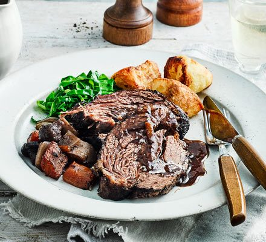

Slow Cooker Beef Pot Roast

Slow Cooker Balsamic Pot Roast is a melt-in-your-mouth tender beef roast, prepared in the slow cooker with potatoes and carrots. This hearty meal is easy enough for a weeknight, but fancy enough for a Sunday dinner!
There’s nothing like a juicy, fall-apart tender pot roast. It’s a nourishing, comforting meal that can be as simple or as elegant as you like. This one is prepared in the crockpot, with the most tender potatoes and carrots, plus rich balsamic gravy.
Have you ever seen such beauty in a piece of meat?! Honestly, I think I may have officially found our favorite pot roast recipe. No, joke. It’s all in the marinade. The balsamic vinegar and seasonings are truly scrumptious – you’ll want to pick up the bowl and slurp it up.
Ingredients
- Potatoes: Cut the potatoes in half, if using small potatoes like I do, or into quarters if you are using larger potatoes.
- Carrots: Using baby carrots makes this recipe so easy! You can also peel and cut whole carrots.
- Salt and Pepper
- Beef Roast: Rump roast is perfect, or you could use another braising cut like chuck roast.
- Garlic: Peel a few garlic cloves, and cut them in half.
- Olive Oil: I used STAR extra virgin olive oil
- Beef Broth: Low-sodium beef broth is my go-to, but you could use regular beef broth or even vegetable broth.
- Brown Sugar: To balance the vinegar and mustard, and to bring out the flavor of the beef.
- Dried Herbs: A blend of oregano, thyme, and basil add flavor and fragrance.
Steps
- Prep the Slow Cooker and Veggies. Spray a 6-quart slow cooker with cooking spray, and then place the carrots and potatoes in the bottom of the slow cooker. Sprinkle them with salt and pepper.
- Prep the Roast. Make a dozen or so small cuts into the roast, and stuff a slice of garlic into each cut. Season the meat all over with salt and pepper. Then heat some olive oil in a large skillet over high heat. Once the oil is hot, place the roast in the skillet and brown it in the oil for about 5 minutes per side. Place the browned roast on top of the veggies in the slow cooker.
- Make the Sauce. In a medium-sized mixing bowl, whisk together the remaining ingredients except the parsley (balsamic vinegar, oil, broth, mustard, brown sugar, herbs, and nutmeg). Slowly pour the balsamic mixture over and around the roast. If necessary, turn the roast and use your hands to coat the meat evenly in the slow cooker.
- Slow Cook the Beef and Veggies. Cover and cook the roast beef on LOW for 6 to 8 hours, or on HIGH for 4 to 6 hours. The roast is done when internal temperature reaches at least 145-degrees Fahrenheit, and the meat is very tender.
- Slice the Roast Beef. Remove the roast beef from the slow cooker, and let rest for at least 10 minutes before cutting. Then slice the meat thinly, and serve it with the vegetables and sauce.